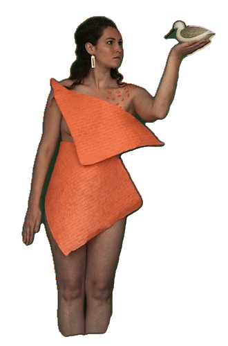

Back

“ Het afstuderen & afstuderen tijdens corona het bezorgt wat angst. Het spookt rond in mijn hoofd. Die angst, allerlei scenario’s die zouden kunnen gebeuren. Bang voor die angst. Bang voor de angst van de angst.
Elke ochtend maak ik een wandeling om mijn hoofd een beetje te kalmeren. Laatst wandelde ik iets wat verdrietig en weer eens dat het allemaal niet zou gaan lukken. Toen op dat moment kom ik tijdens mijn wandeling midden op het pad een schaapje tegen. Ontsnapt van de boerderij vlakbij, denk ik.
Het schaapje loopt op mij af. Die kijkt mij aan. Toen dacht ik, dit project doe ik niet voor niets.
Aan die blik gaf ik betekenis, jij begrijpt mij dacht ik. Zo’n blik die mij even uit de menselijk cirkel doet stappen.
Die bij mij naar binnen kijkt. “